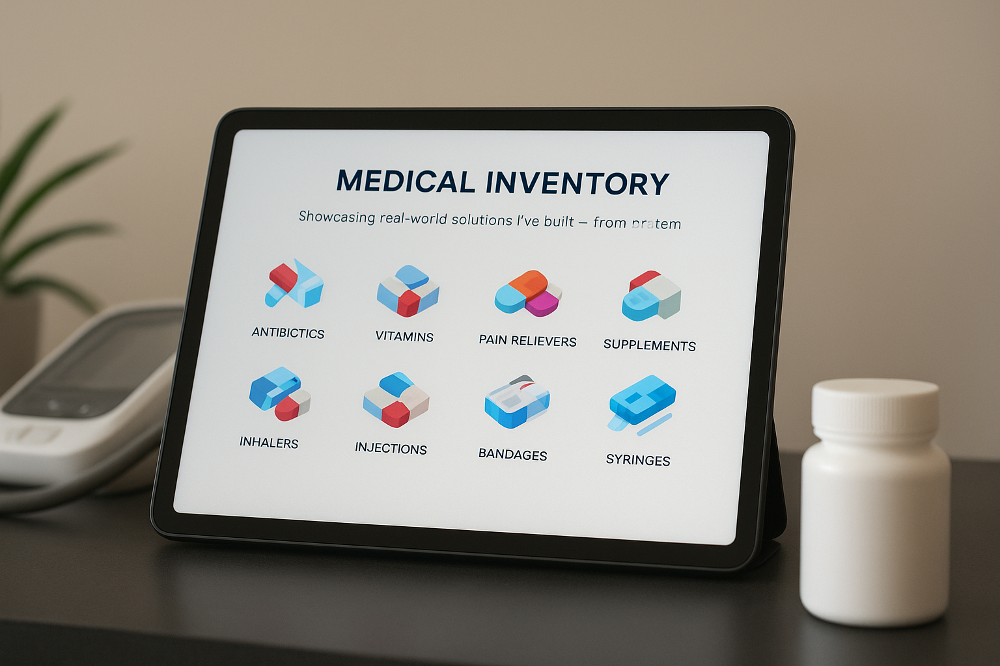
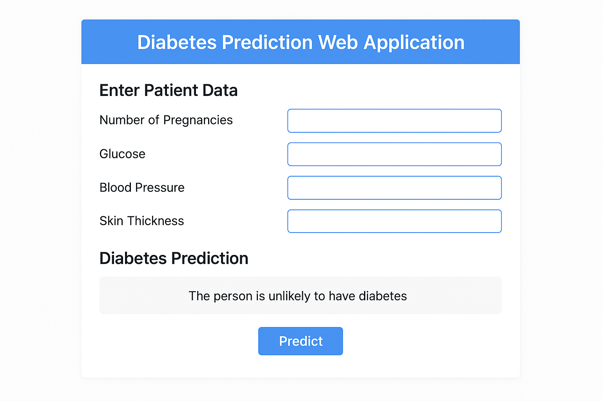
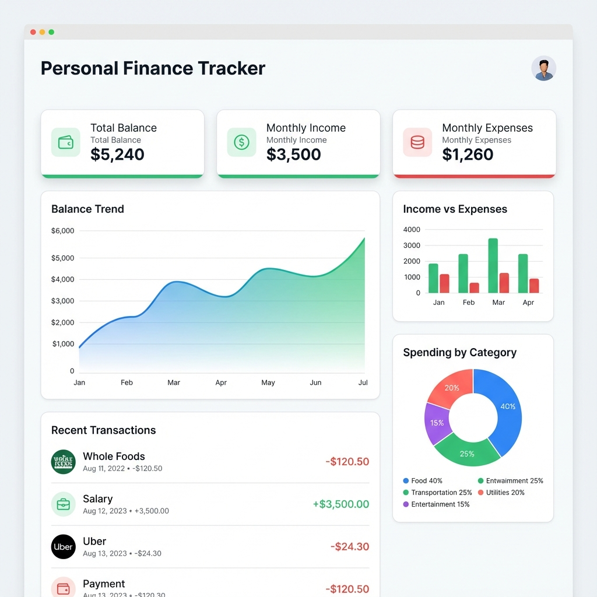
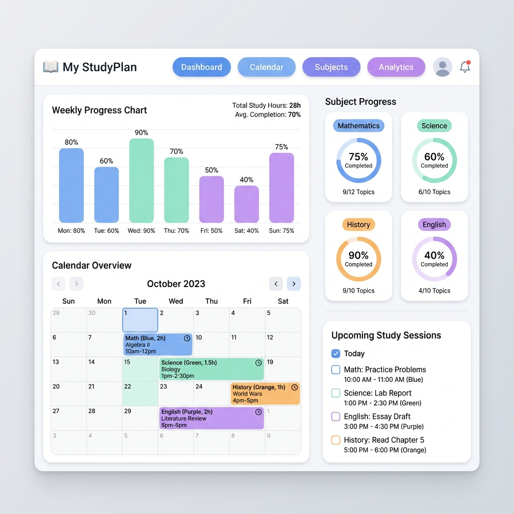
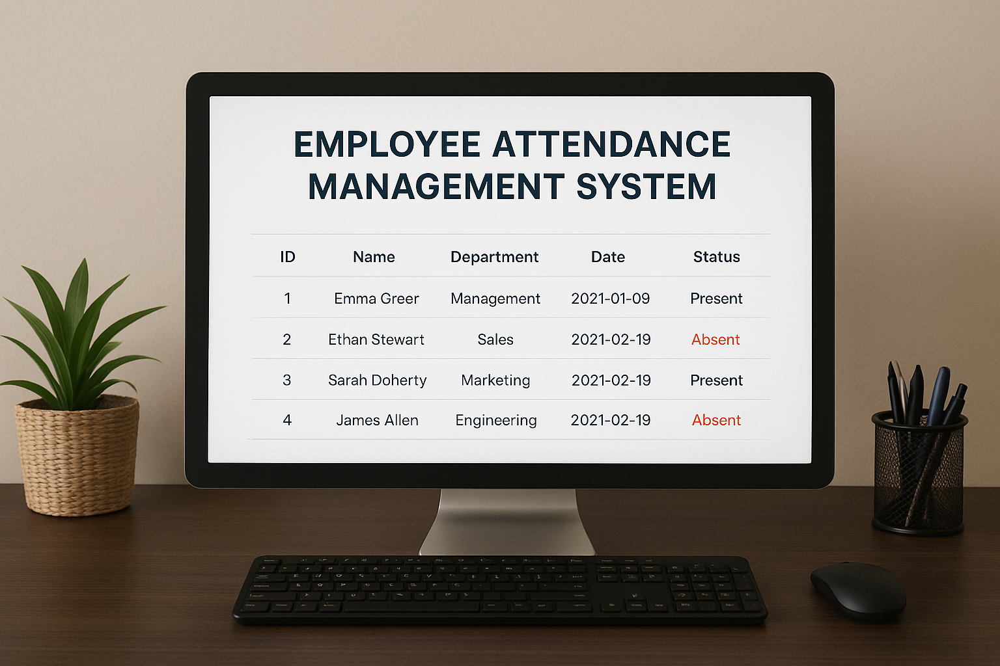
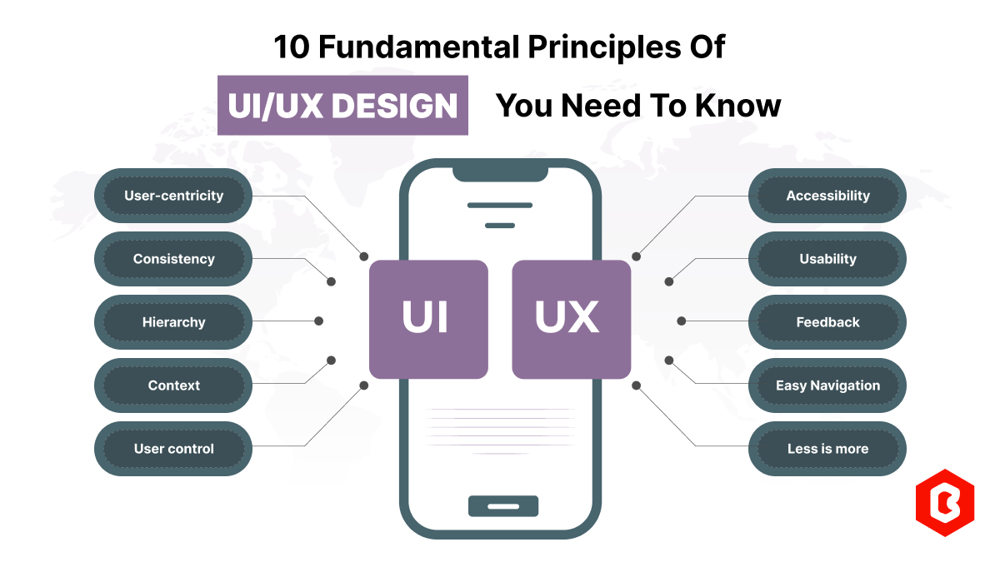

ShiftSync
A workforce scheduling project focused on organizing shifts and improving visibility for teams.
Selected projects
Applications that demonstrate product thinking, implementation skills and continued growth across different technologies.

A workforce scheduling project focused on organizing shifts and improving visibility for teams.

An assistant project exploring conversational interfaces and AI-enabled application workflows.

A browser-based tool for recording transactions, reviewing summaries, filtering records and exporting data.

A focused planning tool that helps learners organize subjects, tasks and study priorities.

An application for maintaining employee records and attendance workflows with persistent data.

An online shopping project built to practice catalog, interface and customer-flow fundamentals.
More context